1. Dashboard — passed targeted checks
Readiness explanation, ranked vacancies and skill gaps. Desktop and mobile captures were inspected together. Stable navigation, page content and original AITU palette are visible.

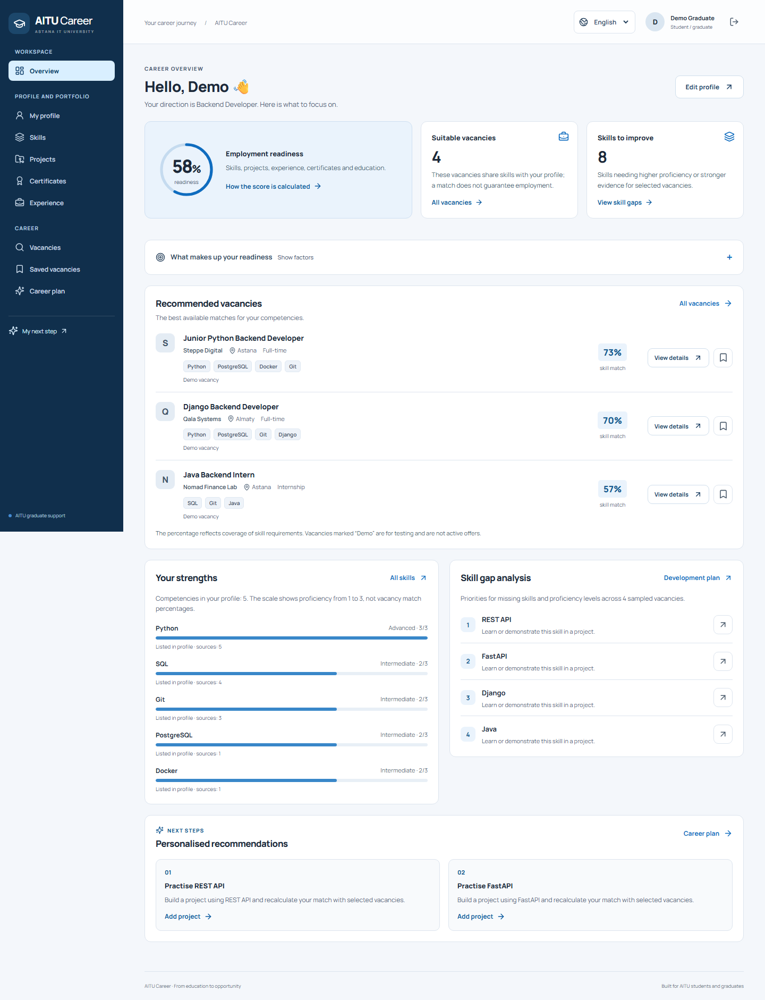

Scope: eleven core screens at 1440px and 390px, captured from the actual local application with fictional demo data. All 22 states rendered without horizontal document overflow. Keyboard traversal showed a visible 3px focus outline on the skip link; the Dashboard browser test separately verifies mobile-menu focus trapping and Escape focus restoration.
Strengths: consistent navy navigation, light content surfaces, explicit demonstration labels, useful empty states, compact profile evidence and visible main actions. Remaining risks: long mobile vacancy/admin lists require scrolling; no claim of a comprehensive contrast, screen-reader, zoom or WCAG-conformance audit is made. The actual browser suite also checks all three interface languages. Review performed with OpenAI Codex assistance; no human teammate or supervisor approval is claimed.
Readiness explanation, ranked vacancies and skill gaps. Desktop and mobile captures were inspected together. Stable navigation, page content and original AITU palette are visible.

Stored personal, career and education fields. Desktop and mobile captures were inspected together. Stable navigation, page content and original AITU palette are visible.
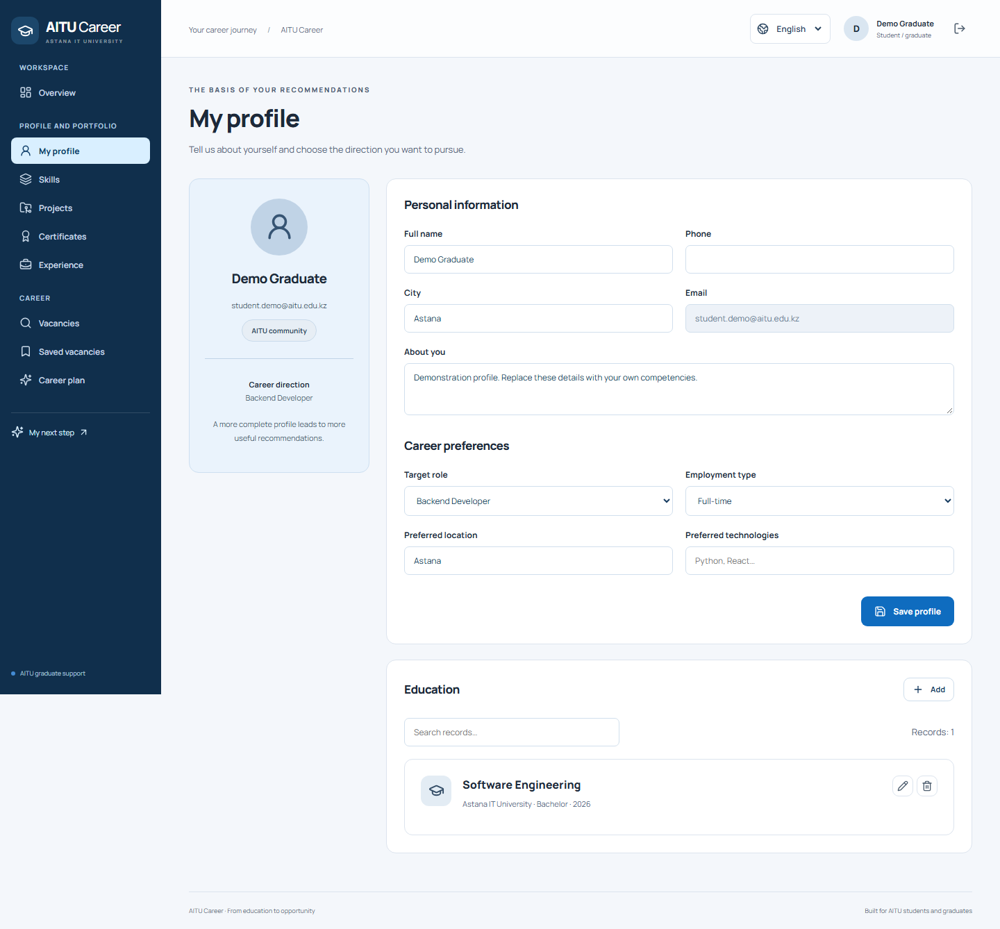
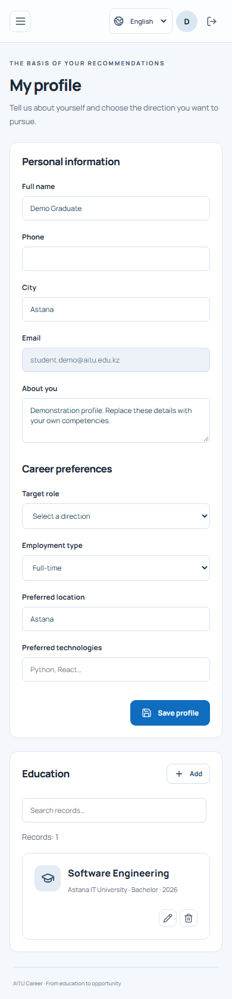
Stored skill levels and editing actions. Desktop and mobile captures were inspected together. Stable navigation, page content and original AITU palette are visible.
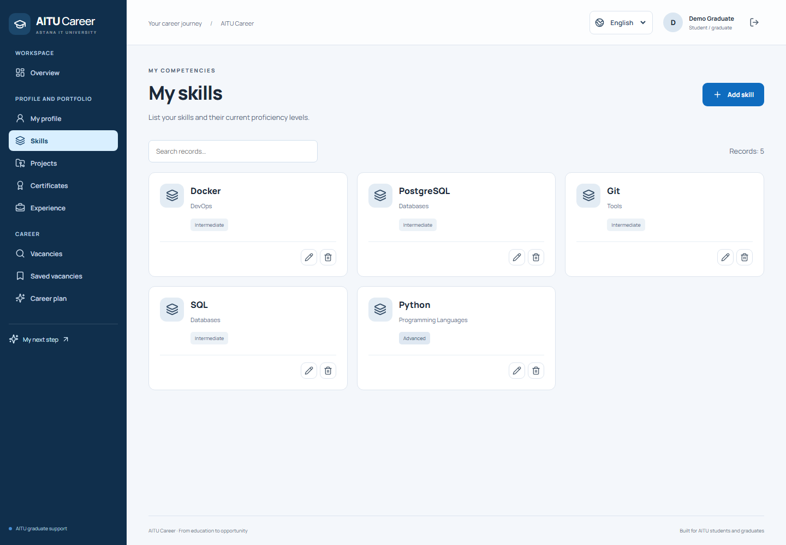
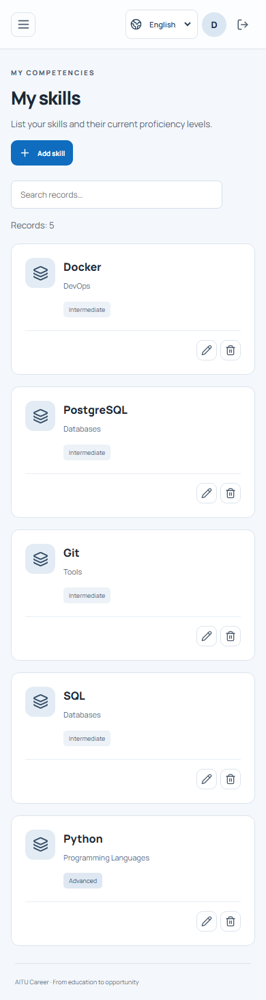
Project evidence and technology tags. Desktop and mobile captures were inspected together. Stable navigation, page content and original AITU palette are visible.
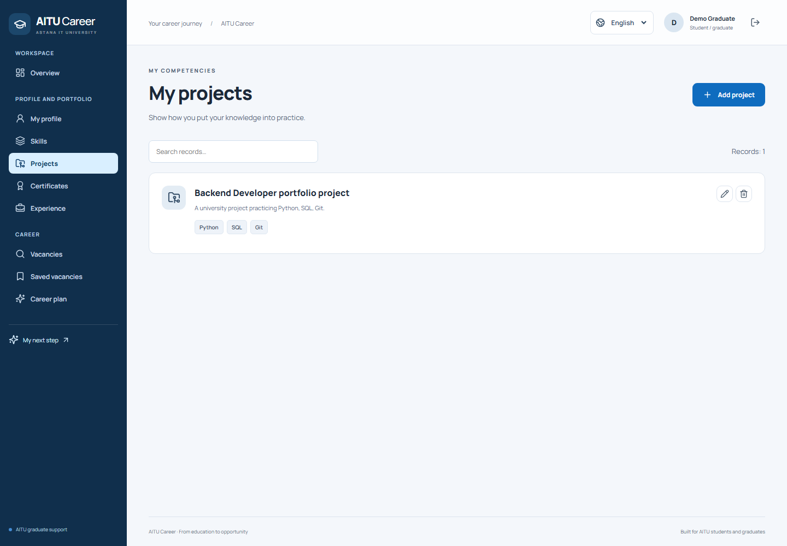
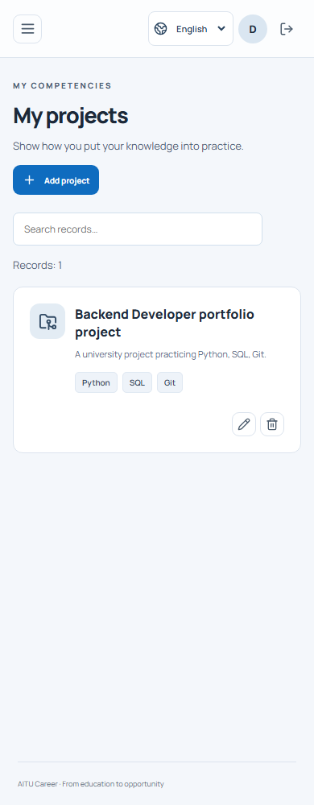
Certificates and their editing actions. Desktop and mobile captures were inspected together. Stable navigation, page content and original AITU palette are visible.
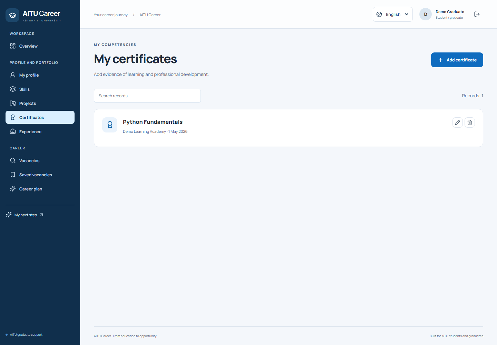
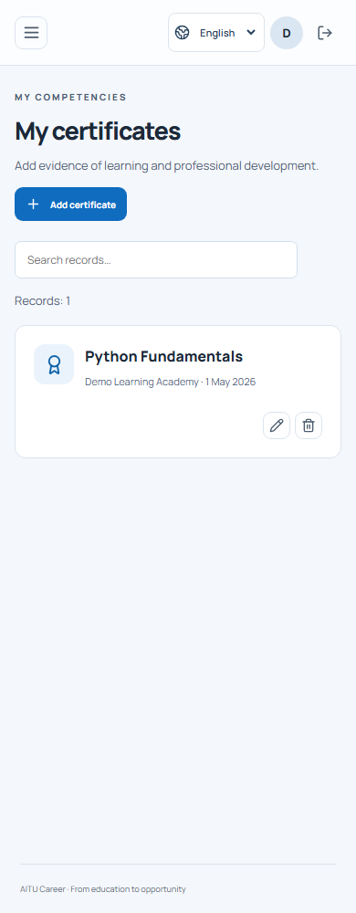
Employment records and dates. Desktop and mobile captures were inspected together. Stable navigation, page content and original AITU palette are visible.
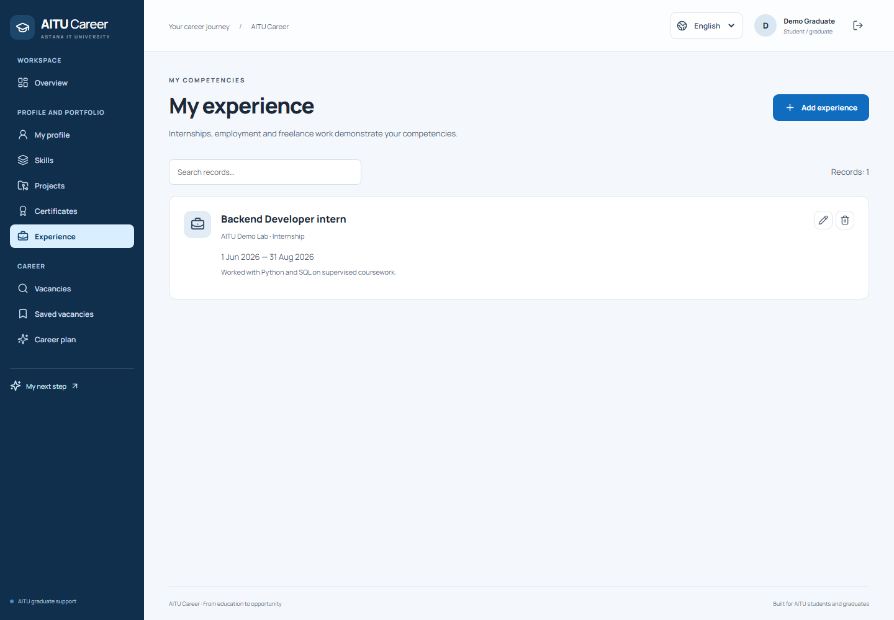
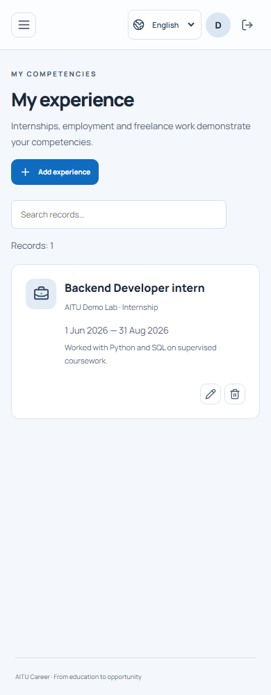
Search, filters and demonstration-data labels. Desktop and mobile captures were inspected together. Stable navigation, page content and original AITU palette are visible.
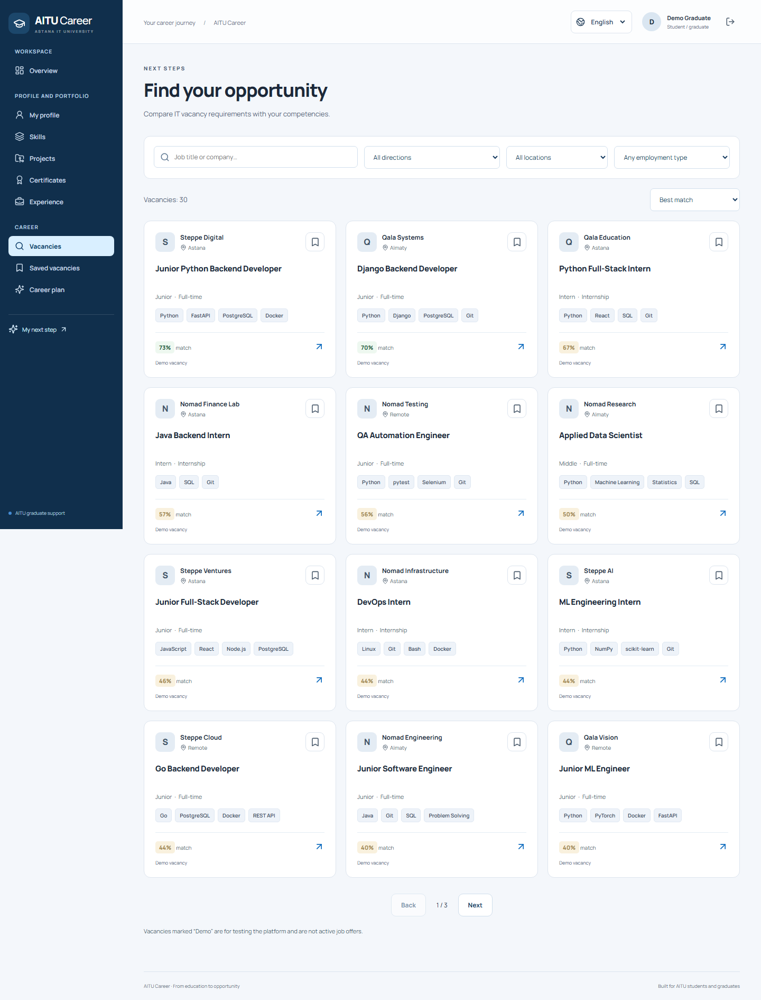
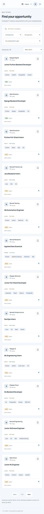
Covered, partial and missing requirements. Desktop and mobile captures were inspected together. Stable navigation, page content and original AITU palette are visible.

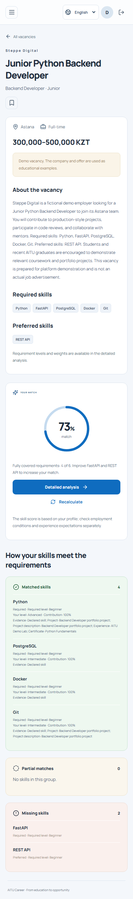
Clear empty state and navigation to jobs. Desktop and mobile captures were inspected together. Stable navigation, page content and original AITU palette are visible.
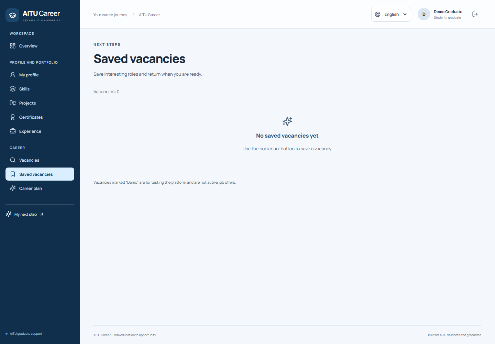
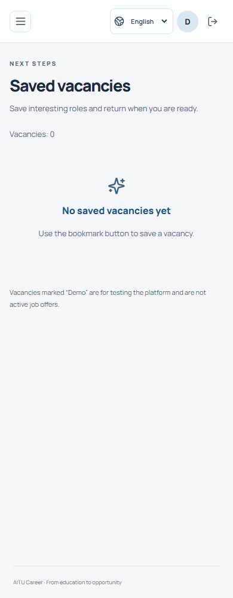
Actions and readiness components from the profile. Desktop and mobile captures were inspected together. Stable navigation, page content and original AITU palette are visible.
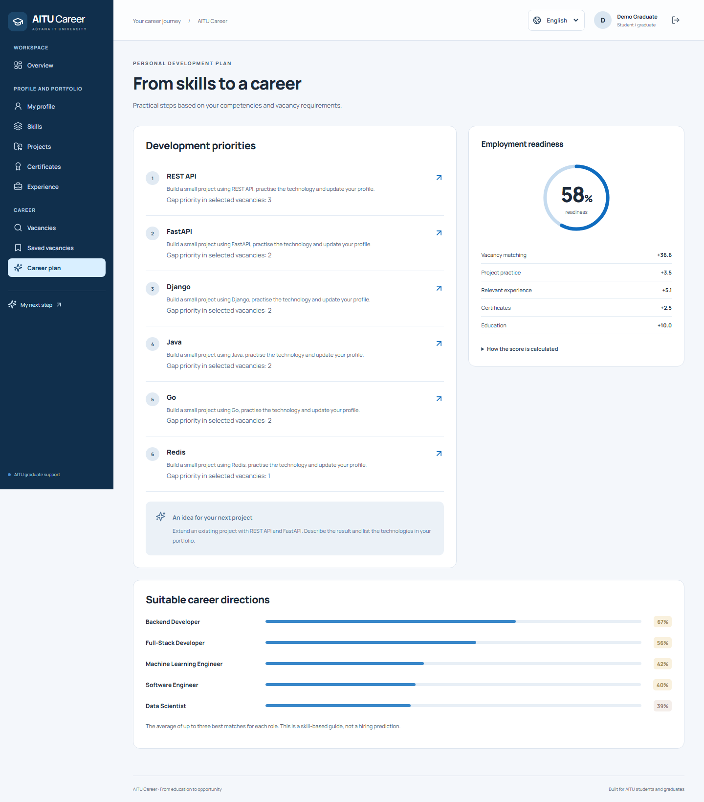
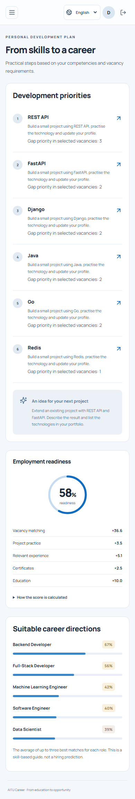
Role-protected catalogue and vacancy management. Desktop and mobile captures were inspected together. Stable navigation, page content and original AITU palette are visible.
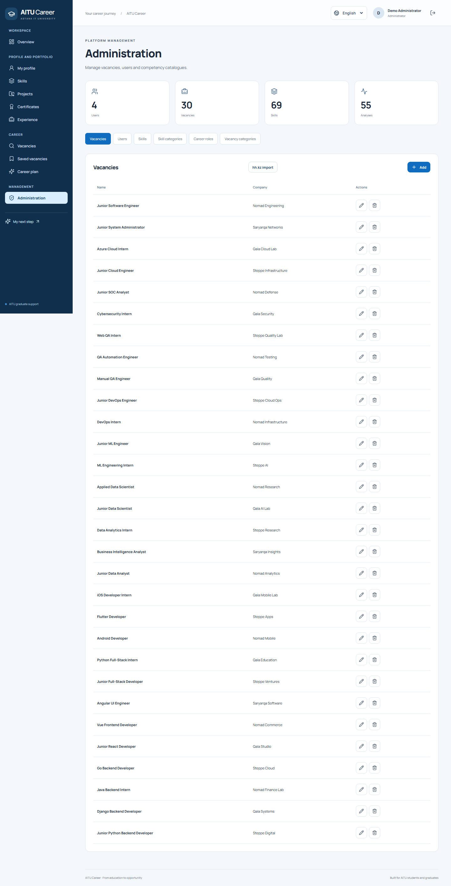
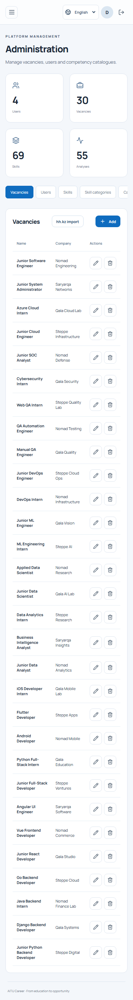